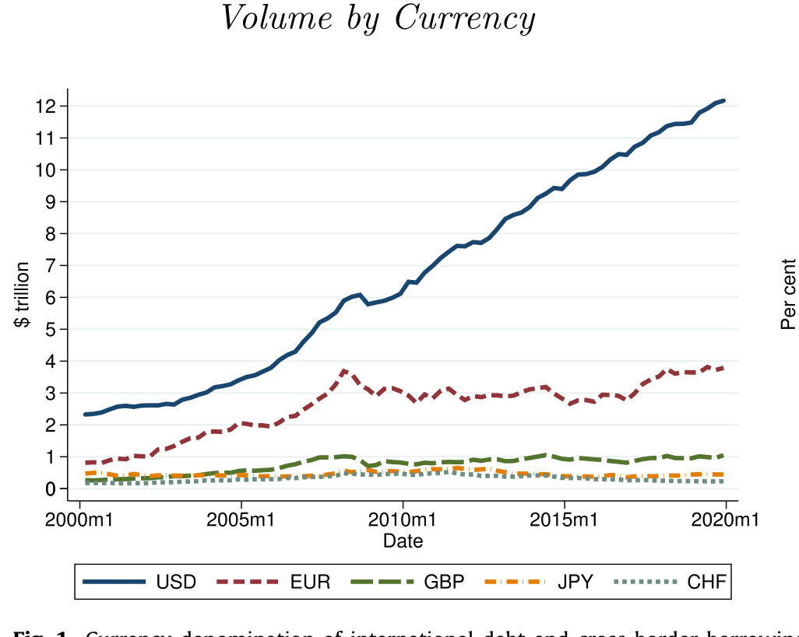
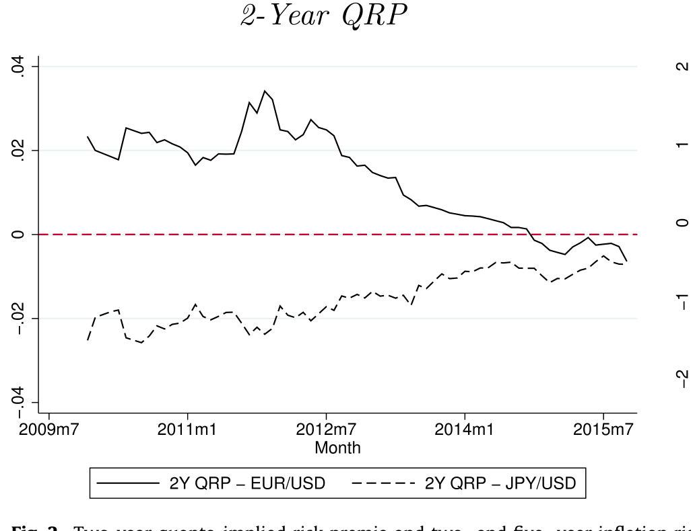
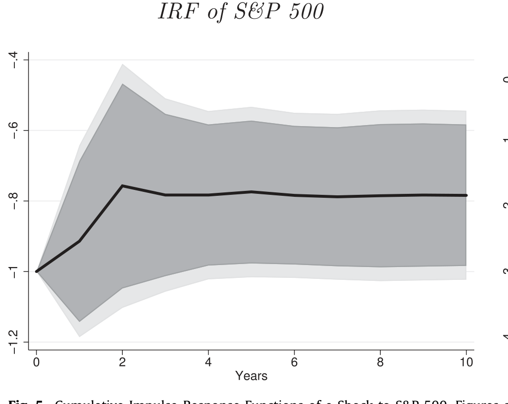
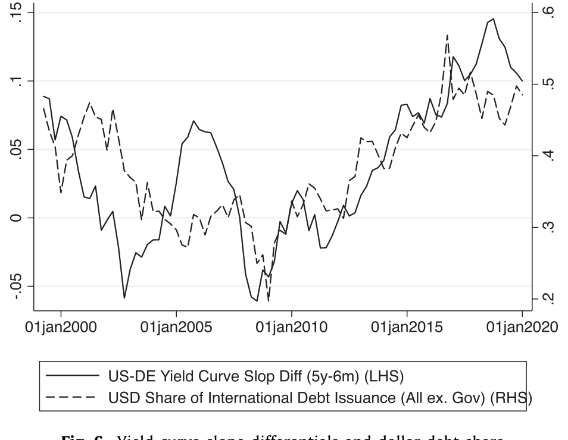
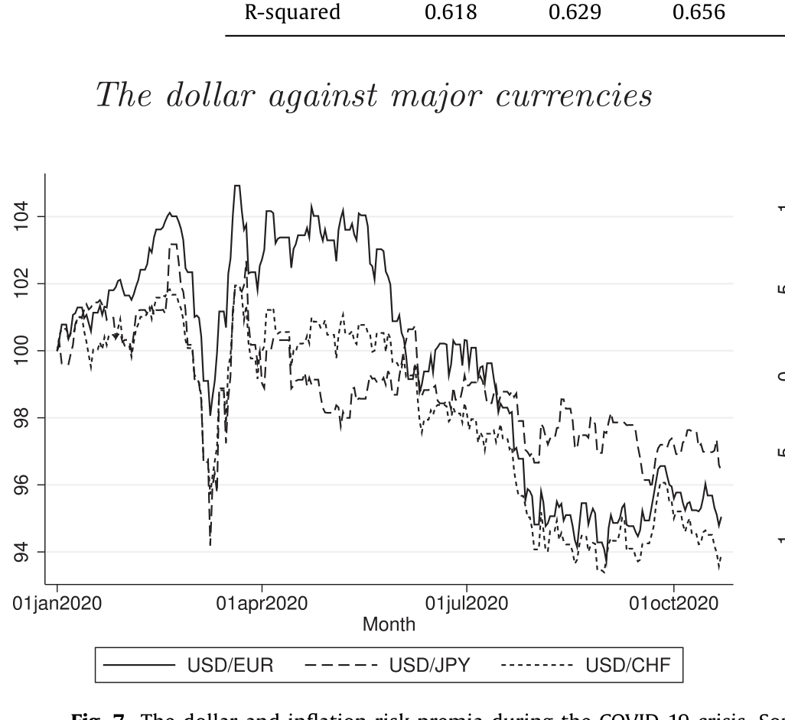
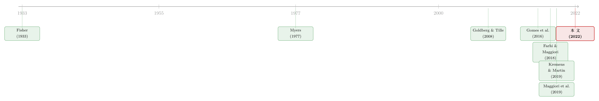

美元为什么敢借得又贵又险？——一个「债务视角」的反转
本文读的是 Eren & Malamud (2022, Journal of Financial Economics)：他们提出一个「债务视角（debt view）」来解释美元为何是全球债务合约的主导货币。核心结论出人意料——大型跨国企业偏爱用美元发债，不是因为美元最安全，恰恰是因为它在债务到期那个时间尺度上「最危险」。一个把汇率与股市协方差作为唯一统计量的资本结构模型，连同 quanto 合约、VAR 脉冲响应与收益率曲线斜率的实证，把这件反直觉的事讲圆了。
1 引言：一个「说不通」的事实
先摆一个尽人皆知的事实：美元是全世界债务合约最常用的计价货币。按国际清算银行（BIS）的口径，美国境外、非银行部门所欠的美元信用大约有 $12 trillion。2008 年金融危机之后，美元的国际地位不降反升（见图 1）。

Figure 1: Currency denomination of international debt and cross-border borrowing
按照传统观点（conventional view），这件事是「投资者驱动（investor-driven）」的：投资者偏好持有那些在坏时候会升值的安全资产，于是企业投其所好，用美元发债来迎合这种需求。听上去顺理成章。
但这套说法面对三个让人不安的挑战。首先，作者用数据指出，在较长的时间跨度上，美元并不是欧元、日元、瑞郎这些主要货币里「最安全」的那个。接着，一个更尴尬的事实是：美元的名义利率明显高于这些货币——如果美元真是大家抢着要的安全资产，它的利率不该更低吗？然后，还有历史这一关：布雷顿森林体系瓦解后，整个 1970 年代美元对其他主要货币大幅贬值，可它的国际地位反而上升了（Gourinchas, 2019）。
于是一个自然的问题摆在面前：如果不是「投资者要安全」，那到底是什么力量，把美元一次次推上债务合约的主位？
2 反转：从「借给谁」转向「谁来借」
作者给出的答案，是把视角整个掉个头——从投资者偏好，转向借款人（borrower-driven）的算盘。这就是他们所谓的「债务视角」。
一句话的直觉：企业之所以偏爱美元债，是因为美元在「债务到期的那个时间尺度上」倾向于在全球低谷里贬值，让企业在最艰难的时候还钱更轻松。换句话说，美元是债务货币里「CAPM 意义上最危险」的那个，而企业偏偏要的就是这份危险。
这里有一个极其漂亮的理论结果：在他们的模型里，企业的货币选择最终归结为一个简单的统计量——股票收益与汇率收益之间的协方差，而且这个结论与贷款人的随机贴现因子（stochastic discount factor）无关。无论投资者偏好长什么样，企业总会在「控制了发行成本之后、与股市协方差最高」的那个货币上发债。
为什么是协方差最高、也就是「最危险」的货币？因为这个货币在全球低谷里贬值，企业用本币换算后的偿债负担就轻——它对企业而言是一份对冲（hedge）。而一个在坏时候贬值的货币，对债权人来说反而是「不保险」的，所以它必须给出更高的风险溢价（risk premium），这又恰好解释了为什么美元的名义利率更高。于是三个「说不通」一次性被打通了：美元成为主导货币，不是尽管它最危险，而正是因为它最危险。
3 模型：一个把货币选择压缩成协方差的资本结构框架
这是一篇有理论模型的论文，值得一步步把它拆开。
设定。 时间离散，\(t=0,1,\cdots\)。一家无限存续的大型跨国企业，产生税后现金流 \(\Pi_t Z_t\)：其中 \(\Pi_t\) 是以美元计的共同生产率冲击，\(Z_t\) 是企业自身的特异冲击（idiosyncratic shock）。\(Z_t\) 服从几何随机游走
$$ Z_{t+1} = Y_{t+1}\,Z_t, $$
其中 \(Y_{t+1}\) 独立同分布，密度为
$$ P(Y_{t+1}=y) = \ell\, y^{\ell-1},\qquad y\in[0,1],\ \ell>0, $$
对应的累积分布函数为 \(\Phi(y)\equiv P(Y\le y)=y^{\ell}\)。这个分布形式借自国际贸易文献（Melitz, 2003），纯粹是为了可处理性。
融资与税盾。 企业同时发行股权与可违约的名义债券，债券可以用 \(N\) 种货币中的任意一种计价。记 \(B_{j,t}\) 为以货币 \(j\) 计价、在 \(t+1\) 偿付的债务面值。每单位债务付票息 \(c\)，且票息享受税盾。净税盾后的总偿债成本为
$$ B_{t+1}(B_t) = \big((1-\tau)c+1\big)\sum_{j=1}^{N} E_{j,t+1}\,B_{j,t}, $$
其中 \(E_{j,t+1}\) 是货币 \(j\) 兑美元的汇率，\(\tau\) 是税率。这一处理紧跟 Gomes et al. (2016) 的「黏性杠杆（sticky leverage）」框架（关于固定发行成本如何把税盾「锁」给股东，可参见《发债没有回头路：一点发行成本，如何替股东锁住了税盾》）。
违约与定价。 不违约时，股东在 \(t+1\) 拿到的名义分配是 \(Z_t\,\Pi_{t+1}\,Y_{t+1}\)。当特异冲击 \(Y_{t+1}\) 跌破一个内生的违约门槛 \(\Theta_{t+1}(B_t)\) 时，股东选择违约、拿零，债权人接管并回收面值与票息的一个比例 \(\rho<1\)。把这套现金流用贷款人的美元随机贴现因子 \(M_{t,t+1}\) 贴现，便得到模型最核心的一块——以货币 \(j\) 计价的单位债务的美元价格：
为什么货币选择会塌缩成一个协方差。 关键在标注 a4 与 a1、a2 的相互作用。债务价格 \(\delta_j\) 里，汇率 \(E_{j,t+1}\) 与「贴现因子 \(\times\) 不违约概率」相乘后取期望——而期望里两个随机变量的乘积，自然会冒出一个协方差项。直觉是这样的：如果某种货币在企业最可能违约、整体经济最差的状态下倾向于贬值（\(E_{j,t+1}\) 走低），那么它压低的恰恰是「坏状态」里的偿付负担，违约门槛 \(\Theta_{t+1}\) 随之下移，违约更不容易发生。于是企业在权衡「税盾收益 vs. 违约成本」时，会一致地选中那个与生产率/股市冲击协方差最高的货币。Theorem 2.1 把「只在美元上发债是最优」的充要条件，正是写成了这样一个关于 \(\mathrm{Cov}_t(\Pi_{t+1},E_{j,t+1})\) 与发行成本差额的不等式。
这个结果之所以漂亮，在于它不依赖贷款人偏好的具体形态：无论 \(M_{t,t+1}\) 长什么样，企业的货币选择都由那一个协方差统计量决定。复杂的国际金融问题，被压缩成了一句话——挑那个「在长期低谷里最会贬值」的货币去借钱。
4 期限结构的反转：短期避险、长期「找险」
模型给出的检验命题是：美元应当是各主要货币里「CAPM 意义上最危险」的——它与股市的协方差，在企业典型债务期限（约 5 年）上最高。可这和我们熟知的「美元在危机里升值避险」不是矛盾吗？
真正关键的一步在于把期限结构（term structure）拆开。 作者用两种办法测这个协方差。
第一种是前瞻性的：利用所谓的 quanto 远期合约（Kremens & Martin, 2019）。一份以欧元结算的 S&P 500 quanto 合约，到期支付以欧元计的指数水平，其定价直接取决于市场对 EUR/USD 汇率与指数协方差的预期。Kremens & Martin 算出两年期 quanto 隐含协方差在危机后呈稳健下行、近年转负——也就是说市场相信「S&P 500 下跌时欧元会对美元升值」，这正与债务视角里「企业愿意借美元」的逻辑吻合（见图 2）。作者进一步发现，quanto 隐含协方差与美元债占比之间存在强烈的负向关系，而且因为回归是季度频率，说明债务的币种构成能在高频上随前瞻预期而变。

Figure 2: Two-year quanto-implied risk premia and two- and five- year inflation
第二种是历史协方差。结论富有戏剧性：在一年以内的短horizon，美元与股市协方差为负——美元在短期坏时候升值，确实比别的货币更安全（这与 Gourinchas et al., 2017 的发现一致）；但符号在更长的、对应典型债务期限的horizon上翻转为正。作者把长horizon协方差分解成「同期」与「领先—滞后」两块，发现同期协方差是负的，但股市能正向预测美元，这股预测力足够强，强到把长horizon的协方差符号扭成正。
为把这种领先—滞后关系讲实，他们对美元与股市的联合收益过程估了一个 VAR，并看一个「股市下跌冲击」后的脉冲响应。结果是：冲击之后，美元在随后各期显著贬值（见图 5）——与理论严丝合缝。既然美元与股市的协方差随horizon拉长而上升，模型顺势预言：发美元债的倾向应随债务期限上升。作者用颗粒度很细的债券发行数据检验，得到强支持。

Figure 5: Cumulative Impulse-Response Functions of a Shock to S&P 500. Figures
5 第二个指纹：最陡的收益率曲线
债务视角还留下另一个可观测的「指纹」。作者证明，在这个框架里，企业总会选名义收益率曲线最陡（steepest yield curve）的那个货币去借钱——背后是一条新颖的跨期权衡（inter-temporal trade-off）机制：企业在「今天拿到税盾收益」与「明天付出违约的有效成本」之间取舍，而这个取舍恰好可以用各币种收益率曲线的斜率来刻画。
顺带一提，作者解了一个带中间期、可加发或回购债务的动态版本，得到一个 Admati et al. (2018) 式的杠杆棘轮效应（leverage ratchet effect）：企业永远不会回购债务，因为回购意味着放弃税盾。于是 \(t=0\) 发的长债会一直持有到期，债券的币种选择问题实际上是「静态」的。
美元同样最符合这个描述。实证上，作者预言美元债发行占比应与「美元—欧元收益率曲线斜率之差」正相关（用美国与德国国债收益率曲线度量）。结果相当醒目：把美元债发行对这个斜率差做回归，得到符号正确且统计显著的估计（见图 6）。

Figure 6: Yield curve slope differentials and dollar debt share
6 通胀、货币政策与 COVID 的「天然实验」
债务视角自然把货币政策拉进了舞台。如果相对通胀是驱动汇率的重要力量（相对购买力平价，relative PPP），那么模型预言：美元债相对欧元债的占比，应与美元的通胀风险溢价（inflation risk premium）正相关、与欧元的通胀风险溢价负相关。作者发现债务币种份额与通胀风险溢价的预期贴得相当紧，尤其在欧元区——这也解释了为何 2010 年代欧元区的通缩风险，可能是欧元失去势头的一个原因。
COVID-19 危机像是为这套理论量身定做的一次检验。冲击袭来后美联储迅速、强力宽松，结果美元对所有主要货币贬值，而且这次贬值几乎是即时发生、几个月内幅度约 10%。对持有美元名义债的企业来说，这是一份实打实的对冲；与此同时，美元的通胀风险溢价相对欧元上升（见图 7）。债务视角因此预言：后疫情期美元债发行应当增加。作者用颗粒度发行数据、控制企业固定效应后确认了这一点。

Figure 7: The dollar and inflation risk premia during the COVID-19 crisis
（关于这次美元异常贬值是否意味着储备货币地位的松动，可对照《这一次，美元贬给了谁看？》；想从供需角度理解美元的强弱，可参见《美元为什么强？》。）
7 文献脉络
把这条线索摊开看，会发现它是几股研究汇到一处的产物。
最上游是关于长期名义债务真实效应的古典命题：Fisher (1933) 的债务—通缩、Myers (1977) 的债务悬置（debt overhang）——后者恰是这家期刊里那篇经典的《Determinants of corporate borrowing》。接着是货币的国际角色文献，大体分三派：「贸易视角」（Goldberg & Tille, 2008 的载体货币）、「安全资产视角」（Farhi & Maggiori, 2018；He et al., 2019），以及由谁来主导全球资本配置（Maggiori et al., 2019）。然后，在公司金融这一侧，Gomes et al. (2016) 的「黏性杠杆」给了本文资本结构的骨架。而真正关键的一步，是测量工具的进步：Kremens & Martin (2019) 的 quanto 汇率理论，让「股市与汇率的前瞻协方差」第一次能从市场价格里直接读出来——这恰是本文核心统计量的实证抓手。
本文所处的位置，是把这两条线——资本结构里的货币选择、与汇率风险溢价的可观测性——焊接成一个「债务视角」，给出了一个不依赖网络效应、价格黏性或安全资产需求的主导货币均衡（关于货币风险溢价如何从信用利差里读出，亦可参见《汇率藏在一张「违约保单」的价差里》；关于大公司发债的币种选择与其销售版图的关系，参见《你的债，说哪国话？》）。

8 评论与延伸（Q&A + 研究方向）
(a) 几个可能的疑问
Q：「债务视角」和「安全资产视角」到底是不是对立的？
不完全对立，更像是分工。安全资产视角抓的是美元的短期避险属性——危机里一年以内美元升值；本文抓的是中长期（典型债务期限约 5 年）协方差符号翻正的那一段。作者明确说，短期避险与长期「找险」可以并存、互不矛盾，本文是对前者的补充而非否定。
Q：「企业偏爱最危险的货币」这个反直觉结论，会不会只是模型假设的产物？
关键不在某个偏好假设，而在那个与贷款人 SDF 无关的协方差统计量。直觉是稳健的：一个在长期低谷里贬值的货币，会在企业最可能违约的状态下压低偿债负担，从而降低违约成本——这对借款人是真金白银的对冲，与投资者怎么想无关。
Q：实证用的是 EUR/USD 的 quanto 和美德国债曲线，能代表「全球」吗？
这是一个诚实的局限。本文聚焦的是「美元 vs. 其他主要安全货币（欧元、日元、瑞郎）」，而非新兴市场企业的「美元 vs. 本币」。欧元/德国是流动性最深、最具可比性的对照，但结论外推到更广的货币篮子仍需更多证据。
Q：协方差符号在长horizon翻正，是不是小样本下的偶然？
作者用了三条相互印证的证据：前瞻性的 quanto 隐含协方差、历史协方差的期限分解、以及 VAR 脉冲响应（股市下跌冲击后美元显著贬值）。三者方向一致，降低了「纯属样本巧合」的担心，但 VAR 识别本身仍依赖于其设定。
Q：货币政策被放进来后，会不会和「风险」的故事抢戏？
在本文里两者是同一枚硬币的两面。央行在低谷里宽松、压低相对通胀，正是让该货币在坏时候贬值的机制之一；通胀风险溢价因此成了协方差故事的「政策版表述」。作者发现币种份额与通胀风险溢价预期贴得很紧，尤其欧元区，说明这条渠道并非附庸。
Q：那美元的主导地位是稳固的，还是可逆的？
模型给的是一个条件性答案：只要美元在债务期限上仍是「最会在低谷里贬值、曲线最陡」的货币，它就保持主导。这意味着主导地位绑定在可观测的风险与货币政策特征上，是会随时间松动的——COVID 后美元债发行回升被读作这套机制仍在运转的证据。
(b) 几个可能的研究问题与提案
-
把「债务视角」搬到公司债二级市场流动性上。【经济故事】如果美元债之所以被偏爱，是因为它在长期低谷里贬值、对借款人是对冲，那么这种「对冲属性」是否也定价进了二级市场流动性溢价？危机里美元债的买卖价差与价格冲击，应当与币种的协方差特征系统相关。【可行性】中。需要 TRACE 级别的公司债成交数据加币种标签，识别上可用 quanto 隐含协方差作为前瞻风险代理，挑战在于把流动性冲击与发行人基本面分离。
-
外资持有人结构 × 币种选择。【经济故事】本文是借款人驱动、与投资者偏好无关；但现实中谁来持有这些美元债，可能反过来影响发行人的再融资风险。把「谁持有」这一维度加进来，能检验债务视角在持有人异质时是否依然成立。【可行性】中。需要债券层面的持有人明细（如 Maggiori-Neiman-Schreger 的跨境持仓数据），识别靠持有人构成的外生变动（如指数纳入、监管约束）。
-
新兴市场的「主导货币 vs. 本币」混合。【经济故事】作者在 Internet Appendix 已给出新兴市场版本的线索：本币与美元的混合，取决于本地通胀及其与美国通胀的关系。把这条做实，能区分「风险对冲」与「本币不可借」两种机制。【可行性】中到低。需要新兴市场企业的币种分债务数据与本地通胀风险溢价估计，识别难点是本币市场深度与美元市场的不可比。
-
收益率曲线斜率作为「币种选择信号」的可交易性。【经济故事】既然企业系统地选曲线最陡的货币，斜率差是否前瞻性地预测了未来的币种发行份额，进而预测汇率？这把一个公司金融命题变成了一个汇率可预测性命题。【可行性】高。所需数据（各国国债曲线、BIS/Dealogic 发行数据）公开可得，识别上可做样本外预测与滚动回归，doable。
9 我的判断
这篇文章最让我佩服的，是它把一个看上去庞杂的国际金融难题，收敛到一个与贷款人偏好无关的协方差统计量——理论的「窄」反而换来了解释力的「宽」，一口气化解了传统观点的三处尴尬。把 quanto 合约用作前瞻协方差的实证抓手，也是漂亮的一着：它让「市场此刻相信美元在坏时候会怎么走」这件本来看不见的事，变得可测、可回归、可季度更新。
要说对识别的担心，主要有三处。其一，长horizon协方差符号翻正是整篇的命门，而它依赖 VAR 的设定与相对有限的样本期，符号的稳健性值得更多压力测试。其二，实证几乎全靠 EUR/USD 与美德曲线这一对，结论能否外推到日元、瑞郎乃至更广篮子，仍是开放的。其三，模型是部分均衡且单期的（作者也坦承，并在工作论文版做过一般均衡），把发行成本差额当成一个外生楔子来吸收现实中的 UIP 偏离，这在解释力与「把问题塞进黑箱」之间走了钢丝。
后续我最想看到的，是把「债务视角」直接接到持有人结构与二级市场流动性上：如果美元债的对冲属性是真的，它应当在危机时的流动性定价里留下可观测的痕迹；而谁持有、外资占比多少，又会反过来改写发行人的再融资风险。这正是公司债、外资持有人与流动性三条线索交汇的地方，也是债务视角下一步最自然的延伸。
参考文献
- Admati, A.R., DeMarzo, P.M., Hellwig, M.F., Pfleiderer, P. (2018). The leverage ratchet effect. Journal of Finance 73, 145–198.
- Eren, E., Malamud, S. (2022). Dominant currency debt. Journal of Financial Economics 144(2), 571–589.
- Farhi, E., Maggiori, M. (2018). A model of the international monetary system. Quarterly Journal of Economics 133(1), 295–355.
- Fisher, I. (1933). The debt-deflation theory of great depressions. Econometrica 1(4), 337–357.
- Goldberg, L., Tille, C. (2008). Vehicle currency use in international trade. Journal of International Economics 76(2), 177–192.
- Gomes, J., Jermann, U., Schmid, L. (2016). Sticky leverage. American Economic Review 106(12), 3800–3828.
- Gourinchas, P.-O., Govillot, N., Rey, H. (2017). Exorbitant privilege and exorbitant duty. Mimeo, UC Berkeley.
- He, Z., Krishnamurthy, A., Milbradt, K. (2019). A model of safe asset determination. American Economic Review 109(4), 1230–1262.
- Kremens, L., Martin, I.W. (2019). The quanto theory of exchange rates. American Economic Review 109(3), 810–843.
- Maggiori, M., Neiman, B., Schreger, J. (2019). International currencies and capital allocation. Journal of Political Economy 128(6).
- Melitz, M.J. (2003). The impact of trade on intra-industry reallocations and aggregate industry productivity. Econometrica 71(6), 1695–1725.
- Myers, S.C. (1977). Determinants of corporate borrowing. Journal of Financial Economics 5, 147–175.